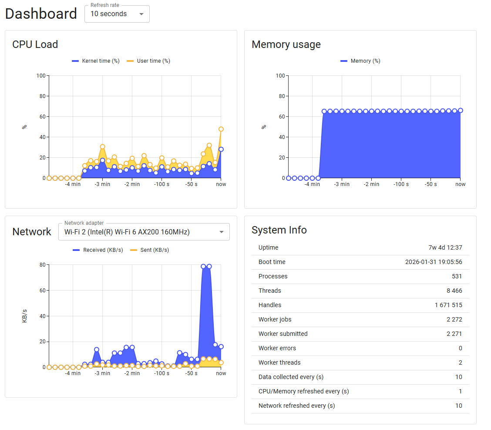
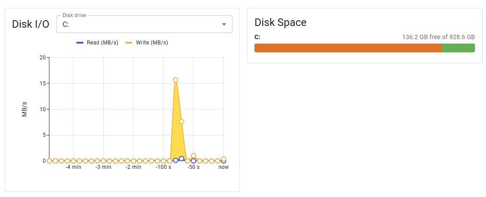
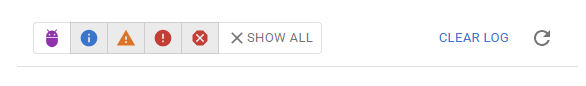

0.11.29 New checks and web ui enhancements
check_battery
Monitor battery status on Windows laptops and mobile devices. This command provides comprehensive battery health and status information using both the Windows Power API and WMI.
- Charge Level Monitoring: Track battery charge percentage with warning/critical thresholds
- Power Source Detection: Determine if system is running on AC or battery power
- Battery Health: Calculate battery health as a percentage of design capacity
- Status Tracking: Monitor charging, discharging, critical, low, and high states
- Time Remaining: Estimate remaining battery life when on battery power
- Detailed Metrics: Access charge/discharge rates and capacity information via WMI
Basic battery check with default thresholds (warn < 20%, crit < 10%):
check_battery
OK: system: 85% (ac, charging)
Check if battery charge is above 50%:
check_battery "warn=charge < 50" "crit=charge < 25"
OK: system: 85% (ac, charging)
Alert if running on battery power:
check_battery "warn=power_source = 'battery'"
WARNING: system: 72% (battery, discharging)
Show detailed battery information:
check_battery "detail-syntax=${name}: ${charge}% (${power_source}, ${status}, health: ${health}%, time: ${time_remaining}s)"
OK: system: 85% (ac, charging, health: 95%, time: -1s)
check_process_history
Track all processes that have been seen running since NSClient++ started. This command maintains a history of process executions, allowing you to verify that certain processes have (or haven't) run.
- Process Tracking: Records every unique process seen since service start
- Execution Counting: Tracks how many times each process has started
- Timestamp Recording: Records first and last seen timestamps
- Current State: Shows whether each process is currently running
- Selective Filtering: Check specific processes by name
Use Cases - Compliance Monitoring: Verify that backup software, antivirus scanners, or other required applications have run - Security Auditing: Detect if unauthorized applications have been executed - SLA Verification: Confirm that scheduled maintenance tasks have executed
As checking processes is expensive it is disabled by default. You need to enable it by setting:
[/settings/system/windows] process history=true
List all processes in history: Check if a specific backup application has run:
check_process_history --process backup.exe "warn=times_seen = 0" "crit=times_seen = 0"
CRITICAL: backup.exe (false) - never seen running
Check if a process is currently running:
check_process_history --process important-service.exe "crit=running = 'false'"
CRITICAL: important-service.exe (false) - not currently running
Alert if a forbidden application has ever run:
check_process_history --process forbidden-game.exe "warn=times_seen > 0"
WARNING: forbidden-game.exe (seen 3 times, not running)
Show detailed history for a process:
check_process_history --process notepad.exe "detail-syntax=${exe}: first=${first_seen}, last=${last_seen}, count=${times_seen}, running=${running}"
OK: notepad.exe: first=2026-04-06 08:15:32, last=2026-04-06 14:22:45, count=5, running=false
check_process_history_new
Detect processes that have been started recently within a configurable time window. This is useful for security monitoring to detect unexpected process launches.
- Time-Based Detection: Find processes first seen within a configurable window
- Flexible Time Windows: Support for seconds (s), minutes (m), hours (h)
- Security Focused: Ideal for detecting new/unexpected process launches
Use Cases - Security Monitoring: Detect newly launched processes that might indicate compromise - Change Detection: Monitor for new software installations or unauthorized programs - Incident Response: Identify what processes started around the time of an incident
As checking processes is expensive it is disabled by default. You need to enable it by setting:
[/settings/system/windows] process history=true
Check for any new processes in the last 5 minutes (default):
check_process_history_new
OK: No new processes found.
Check for new processes in the last hour:
check_process_history_new --time 1h
WARNING: suspicious.exe (first seen: 2026-04-06 14:15:32)
Check for new processes with detailed output:
check_process_history_new --time 30m "detail-syntax=${exe} started at ${first_seen} (running: ${running})"
OK: updater.exe started at 2026-04-06 14:10:00 (running: false)
Beware that depending on if you are looking for wanted or unwanted processes you likely want to change
empty-statetook, orcritical.
check_service overhaul
Fixed a reported bug as well as overhauled the check with some new features and modernized the checks.
This is technically a breaking change, in that it will classify some services as "ok" which was not before. But I doubt that anyone relied on the default checking of all services
state_is_perfect()now treats auto-start services with triggers as OK when stopped (trigger-start services legitimately remain stopped until their trigger fires)state_is_ok()now treats auto-start services with triggers as OK when stopped (same as delayed services were already treated)state_is_ok()now treats auto-start services that stopped with exit code 0 as OK (services like WslInstaller that start, complete their task, and stop cleanly no longer trigger CRITICAL)- Added new filter keyword 'exit_code' exposing the Win32 exit code of a service. Allows users to write custom filters like 'exit_code != 0' to detect failed services
- Improved error logging in trigger detection.
fetch_triggers()previously swallowed all errors silently; now logs unexpected failures - check_service: Updated service classification list for Windows 11 24H2 / Server 2025
- Added modern services: WslInstaller, WaaSMedicSvc, UsoSvc, DoSvc, CoreMessagingRegistrar, SecurityHealthService, SystemEventsBroker, vmcompute, HNS, sshd, LxssManager, and others
- Removed obsolete services no longer present in modern Windows: Browser, NtFrs, IISADMIN, TlntSvr, napagent, IEEtwCollectorService, UI0Detect, SMTPSVC, aspnet_state, and others
- Reclassified: COMSysApp (essential → ignored), SystemEventsBroker (supporting → system), WerSvc/wercplsupport (role → ignored)
- Fixed casing: Eventsystem → EventSystem, systemEventsBroker → SystemEventsBroker
- Changed default detail-syntax to include
exit_code. From${name}=${state} (${start_type})into${name}=${state}, exit=%(exit_code), type=%(start_type) - Removed warning messages for excluded services. If a service is excluded we will not try to enumerate it.
Improvements to web-ui
web-disk-widgets
This version adds some new dashboard widgets that showcases system statistics as well as a network graph and disk stats. I also fixes and issue relating to calculating network measurements.


It also changes the tools bar slightly to make them a bit less intense:

Other changes:
- three new metrics which contains the refresh times of metrics, system metrics and network metrics so you can see this in the web UI.
- Removes unnecessary scientific notations for number in the metrics api so now you will get
1instead of1E1. Both are valid json so this should not impact anyone as long as your not using grep or some such to parse the json.
Download
You can download the new version from GitHub
// Michael Medin